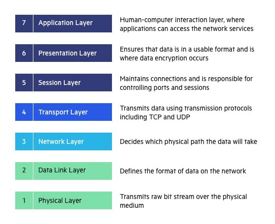
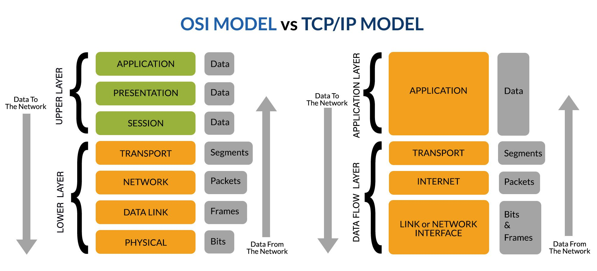

TCP/IP Model
The TCP/IP model is a set of rules and steps that explains how data moves from one device to another over a network or the internet.
👉 Think of TCP/IP like a delivery system
(Amazon / Swiggy style 🚚) that decides:
- How data is created
- How it is packed
- How it travels
- How it is delivered correctly
What is the TCP/IP Model?

🌐 Real-World Example (VERY IMPORTANT 💡)
📱 You open google.com on your phone.
- Your phone creates a request
- Data is broken into small packets
- Packets travel through routers on the internet
- Google’s server receives and understands the request
- Google sends the response back (page loads)
🧩 TCP/IP Model Layers (CCST Focus ⭐)
| Layer No. | Layer Name | What It Does |
|---|---|---|
| 4️⃣ | Application | What the user uses |
| 3️⃣ | Transport | How data is delivered |
| 2️⃣ | Internet | IP address & routing |
| 1️⃣ | Network Access | Physical sending of data |
TCP/IP Data Flow

🟦 Layer 4: Application Layer
Closest layer to the user. Allows apps and software to use the network.
Common Protocols:- HTTP / HTTPS → Websites
- FTP → File transfer
- SMTP → Sending emails
- DNS → Name → IP conversion
Typing
https://youtube.com👉 Application layer understands: “User wants a website”
🟩 Layer 3: Transport Layer
- TCP → Reliable, safe, slower
- UDP → Fast, no guarantee
🏦 Online banking → TCP (accuracy matters)
Exam Trick:
TCP = Reliable
UDP = Fast
🟨 Layer 2: Internet Layer
Handles IP addresses and routing.
Main Protocol: IPExample:
- Your IP → 192.168.1.10
- Google IP → 142.250.182.14
🟥 Layer 1: Network Access Layer
Responsible for physical data transmission.
Examples:- Ethernet cable
- Wi-Fi
- Network Interface Card (NIC)
⚡ Electrical signals (cable)
📡 Radio waves (Wi-Fi)
🔁 How Data Flows (VERY IMPORTANT 🔥)
📤 Sending Device
Application → Transport → Internet → Network Access
📥 Receiving Device
Network Access → Internet → Transport → Application
📌 Same layers, reverse direction
Application → Transport → Internet → Network Access
📥 Receiving Device
Network Access → Internet → Transport → Application
📌 Same layers, reverse direction
🧠 One-Line Memory Trick (Exam GOLD 🥇)
“Application creates data, Transport delivers it, Internet routes it, Network sends it.”
“Application creates data, Transport delivers it, Internet routes it, Network sends it.”
OSI Model (Open Systems Interconnection)
The OSI Model is a 7-layer conceptual model that explains how data moves in a network step by step.
📌 It is not a real protocol
📌 It is a learning + troubleshooting model
📌 It is a learning + troubleshooting model
💡 Think like this:
TCP/IP → How the internet actually works
OSI → How humans understand and fix network problems
TCP/IP → How the internet actually works
OSI → How humans understand and fix network problems
OSI Model – 7 Layers Overview

🧠 Why OSI Model is IMPORTANT for CCST (Very Important 🔥)
As a network support technician, your main job is troubleshooting.
You must answer questions like:
- ❓ Is the cable faulty?
- ❓ Is IP missing?
- ❓ Is the application down?
📌 Instead of guessing, you check layer by layer.
🧩 OSI Model – 7 Layers (Top to Bottom)
| Layer No. | Layer Name | Easy Meaning |
|---|---|---|
| 7️⃣ | Application | What the user uses |
| 6️⃣ | Presentation | Format & security |
| 5️⃣ | Session | Connection control |
| 4️⃣ | Transport | Reliable delivery |
| 3️⃣ | Network | IP & routing |
| 2️⃣ | Data Link | MAC & switching |
| 1️⃣ | Physical | Cables & signals |
OSI 7 Layers Explained (Detail)

🧠 Memory Trick (EXAM GOLD 🥇)
👉 All People Seem To Need Data Processing
- Application
- Presentation
- Session
- Transport
- Network
- Data Link
- Physical
🟦 Layer 7: Application Layer
Direct interaction with user applications.
Examples:- Web browser (Chrome)
- Email client (Gmail, Outlook)
- HTTP / HTTPS
- FTP
- SMTP
- DNS
❌ Website not opening
✔ First check Application layer
🟩 Layer 6: Presentation Layer
Handles:
- Data formatting
- Encryption & decryption
- Compression
- HTTPS encryption 🔐
- JPEG, PNG images
- MP4 videos
🟨 Layer 5: Session Layer
Manages:
- Session start
- Session maintenance
- Session termination
- Staying logged into a website
- Session timeout after inactivity
🟥 Layer 4: Transport Layer
Handles:
TCP = Reliable
UDP = Fast
- End-to-end delivery
- Error correction
- Flow control
- TCP → Reliable, safe
- UDP → Fast, no guarantee
- File download → TCP
- Video streaming → UDP
TCP = Reliable
UDP = Fast
🟪 Layer 3: Network Layer
Handles:
🧠 Examples:
- IP addressing
- Routing between networks
🧠 Examples:
- No IP address
- Router not working
🟧 Layer 2: Data Link Layer
Handles:
- MAC addressing
- Switching
- Error detection (frames)
- Switch
- Network Interface Card (NIC)
- Switch port disabled
- MAC address issue
⬛ Layer 1: Physical Layer
Handles physical transmission using:
- Electrical signals
- Optical signals
- Radio waves
- Ethernet cable
- Fiber cable
- Wi-Fi signals
- Cable unplugged ❌
- No Wi-Fi signal ❌
OSI vs TCP/IP Model

OSI vs TCP/IP Diagram

🔁 How Technicians Troubleshoot (Real Method)
Support engineers usually check Bottom → Top:
1️⃣ Check cable
2️⃣ Check switch
3️⃣ Check IP
4️⃣ Check service
📌 This saves TIME and avoids confusion.
1️⃣ Check cable
2️⃣ Check switch
3️⃣ Check IP
4️⃣ Check service
📌 This saves TIME and avoids confusion.
🎯 Final One-Line Summary (Remember This 💡)
OSI Model helps you understand WHERE the network problem is, layer by layer.
OSI Model helps you understand WHERE the network problem is, layer by layer.